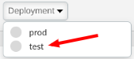

In this lab you will learn how to use the built-in wizard to convert existing SOAP to a Rest API. The wizard generates the basic configuration that can then be used as a starting point for your production proxy.
What you'll learn
- How to protect sensitive data from being displayed during trace sessions
- How to protect variables by prefixing them
- How to create data masks via Apigee's Management APIs
What you'll need
- Basic understanding of data masking on Apigee https://docs.apigee.com/api-platform/security/data-masking
- Basic understanding of the Data Mask API
https://apidocs.apigee.com/api-reference/content/data-masks - The default ‘helloworld' proxy -- download from here and deploy it to the test environment if you don't already have it in your org
Use case
You want to protect sensitive data from being displayed during trace.
- Mark variables as private
- Create data masks configurations for a proxy
- Create data masks configurations for the whole organization
By default most variables are visible during a trace session. If you want to protect its contents, you may mark a variable as private and its content will be masked during tracing.
Go to Develop/API Proxies:
And select the sample proxy called ‘helloworld'. It should have already been there when you created your eval account.
Now let's save this proxy as a new proxy. Click the Project button and select 'Save as New API Proxy...':
Name the new proxy:
lab6a-v1
You won't be able to deploy the proxy until you change the HTTPProxyConnection configuration, since the same virtual hosts + basepath is already deployed as helloworld.
Click on the Develop tab and change the HTTPProxyConnection to this:
<HTTPProxyConnection>
<BasePath>/lab6a/v1</BasePath>
<VirtualHost>secure</VirtualHost>
</HTTPProxyConnection>
Save and deploy the proxy to the test environment. Click the Deployment button, and click on the test environment.

Which will bring up a popup to confirm the deployment:
Click on ‘Deploy'.
Go to the Develop tab and click on the PreFlow (under the Proxy Endpoints)
Click on the ‘+ Step' button to add a policy right after the one called ‘Add CORS'

In the new pop up window, scroll down to find the Extract Variables policy and select it. Name the new policy:
EV-QueryParamTestClick on Add.
You should now see the new policy in place in the flow, as well as its default configuration.
In the XML editor at the bottom of your window, replace the contents of the policy with the following:
<ExtractVariables async="false" continueOnError="false" enabled="true" name="EV-QueryParamTest">
<QueryParam name="test">
<Pattern ignoreCase="true">{test}</Pattern>
</QueryParam>
<IgnoreUnresolvedVariables>true</IgnoreUnresolvedVariables>
<Source clearPayload="false">request</Source>
<VariablePrefix>apigee</VariablePrefix>
</ExtractVariables>This will tell the policy to look for a query parameter called ‘test' and copy its contents to a variable called ‘test', but with a prefix of ‘apigee'. The new variable will be referenced as ‘apigee.test'.
Save your changes and make sure your proxy is deployed.
Switch to the Trace tab, select the test environment and start a new trace session.
Append ‘?test=123' to the URL and click on Send
When you select the 3rd policy in the Transaction Map (our newly added policy), you should see the new apigee.test variable being populated.
Now, let's get back to the same policy and change its prefix to ‘private'
Save the proxy, and let's test again in the trace.
You should no longer see that variable present in the list since it's now been marked as a private variable.
Any variable that starts with "private." will not show in the trace.
For this step, we'll be using the Apigee's Management APIs. In specific the one at:
Open the link above into a new tab in your browser. We'll be invoking the API to configure our data masks directly from the documentation.
Scroll down to where you see the session titled ‘Resource URL'
In the URL itself, replace ‘{org_name}' with the name of your organization in Apigee, for example "student-eval", and ‘{api_name}' with the name of the proxy we are adding masks for. In our case "helloworld"
Scroll a bit further down to find the Request Body session. We'll modify it to block the X-Forwarded-For header in the trace:
<MaskDataConfiguration name="default">
<Variables>
<Variable>request.header.X-Forwarded-For</Variable>
</Variables>
</MaskDataConfiguration>Before you click on ‘Send this request', you'll need to enter your credentials for your organization by clicking on the button that says ‘HTTP Basic'
Enter your credentials and click on ‘Save'. Optionally you can check the box for your browser to remember the email and password.
Then click on ‘Send this request'
Right under it, you should see the response from the API execution:
Back in the proxy, start a new trace session and send a request. Click on the first circle in the trace, and see that the X-Forwarded-For header is masked:
You can remove this mask by going to Delete Data Mask page: https://apidocs.apigee.com/management/apis/delete/organizations/%7Borg_name%7D/apis/%7Bapi_name%7D/maskconfigs/%7Bmaskconfig_name%7D
The same way that we can protect individual proxies, you can also create similar masks that will apply across all APIs in the organization.
The same steps apply, it's just using different Management APIs:
You can now protect specific data from an API from being displayed during trace sessions.